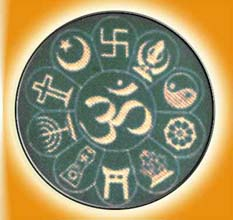

The ideology of Ramakrishna Math and Mission consists of the eternal principles of Vedanta as lived and experienced by Sri Ramakrishna and expounded by Swami Vivekananda. This ideology has three characteristics: it is modern in the sense that the ancient principles of Vedanta have been expressed in the modern idiom; it is universal, that is, it is meant for the whole humanity; it is practical in the sense that its principles can be applied in day-to-day life to solve the problems of life. The basic principles of this ideology are given below:
1. God realization is the ultimate goal of life :
One of the important
discoveries made in ancient India was that the universe arises from and is sustained by
infinite consciousness called Brahman. It has both impersonal and personal aspects.
The personal aspect is known by different names, such as God, Ishvar, Jehovah and so on.
Realization of this Ultimate Reality is the true goal of life, for that alone can give
us everlasting fulfilment and peace.
2. Potential divinity of the soul :
Brahman is immanent in all beings as the
Atman which is man's true self and source of all happiness. But owing to ignorance,
he identifies himself with his body and mind and runs after sense pleasures. This is
the cause of all evil and suffering. As ignorance is removed, the Atman manifests itself
more and more. This manifestation of potential divinity is the essence of true religion.
3. Synthesis of the Yogas :
The removal of ignorance and manifestation of inner
divinity leading to God realization are achieved through Yoga. There are four main
Yogas:
Jnana Yoga (Yoga of Knowledge)
Bhakti Yoga (Yoga of Devotion)
Raja Yoga (Yoga of Meditation)
Karma Yoga (Yoga of Work)
Each Yoga is an
independent means of realizing God. But since each Yoga involves the cultivation
of one of the faculties such as reason, feeling or will, a combination of all the
four Yogas is necessary for the development of a balanced, 'fully functioning'
personality. It is this synthesis of Yogas that Swami Vivekananda regarded as
the ideal of Ramakrishna Math and Mission. This ideal finds expression in the
EMBLEM of the twin organizations shown here, which was designed by Swamiji himself.
In the emblem the wavy waters represent Karma Yoga; the lotus flower represents
Bhakti Yoga; the rising sun represents Jnana Yoga; the coiled serpent represents
Raja Yoga; and the Swan represents the Supreme Self. The meaning of the ensemble is:
by the combined practice of all the four Yogas the Supreme Self is realized.
4. Morality based on strength :
According to Swami Vivekananda, weakness is the
main cause of immorality, evil and suffering in life, and the cause of weakness is
ignorance about one's true nature as the Atman. Knowledge of the Atman gives us
tremendous strength to overcome our weakness and lead a virtuous life. Everyone is
endowed with so many potentialities, but owing to fear and weakness, most of these
potentialities remain unactualized. When, through knowledge of the Atman, fear and
weakness are overcome, these potentialities manifest themselves. Swamiji called this
process 'man-making education'.
5. Harmony of Religions :
Although the idea that 'one Reality is known by
different names' (Vedas) and the idea that 'different spiritual paths lead to the same
goal' (Gita) are found in the Hindu scriptures and in the teachings of several Hindu
saints, Sri Ramakrishna was the first person in history to show through direct experience
the transcendental unity of all religions. His message implies two kinds of religious
harmony: harmony within Hinduism and harmony among world religions.
a. Harmony
within Hinduism :
Sri Ramakrishna did not identify himself with any particular
sect of Hinduism but accepted Hinduism as a whole. He showed that Dualism, Non‑dualism
and other schools of Hindu philosophy represent different stages of the integral
experience of Reality, and that the various Hindu Deities are different aspects of one
supreme Godhead. His message has brought about a great deal of harmony among the Hindu
sects, and Sri Ramakrishna himself has become the symbol of the unity of Hindu religion.

b. Harmony among world religions :
It should be noted that Sri Ramakrishna recognized the differences among religions but
showed that, in spite of these differences, they lead to the same Ultimate Goal.
This is the meaning of his famous maxim, Yato mat, tato path, “As many faiths, so many paths”.
Apart from this, Swami Vivekananda also held that the religions of the world are
expressions of one eternal Universal Religion. Since Vedanta contains all the basic
principles and laws of the spiritual world, Swamiji regarded Vedanta as that eternal
Universal Religion. That is to say, Vedanta can serve as the common ground for all religions.
6. Avatarhood of Sri Ramakrishna :
According to the Hindu religious tradition,
God incarnates himself as the Avatar in every Age in order to give a new message to
humanity suited to the needs of each Age. In the Ramakrishna Movement, Sri Ramakrishna
is adored as the Avatar of the Modern Age. What this means is that his life and
teachings have opened a new way of salvation for humanity. The uniqueness of Sri
Ramakrishna's Avatarhood is that it embodies the spiritual consciousness of earlier
Avatars and prophets, including those who are outside the Hindu fold, and is in harmony
with all religious traditions. In all the institutions of the Ramakrishna Order,
worshipful reverence is shown to all Avatars and the founders of all religions.
7. A New Philosophy of Work :
Swami Vivekananda has given a new philosophy of
work for the modern world. All work in the Ramakrishna Math and Mission is done
according to this philosophy of work, which is based on the following principles:
a. According to Vedanta, the physical universe is a manifestation of God known as Virat.
Hence, as Sister Nivedita has stated, there is 'no distinction between the sacred and the
secular'. What this statement means is that all work is sacred. Even menial work such
as sweeping the floor or mending shoes is to be done with as much attention and devotion
as work in the shrine.
b. The Gita (18.46 & 9.24) states that the all-pervading
God is the ultimate source of all work and the enjoyer of the fruits of all sacrifice.
Hence all work is to be done as worship and the fruits of actions are to be offered to
the Lord.
c. One of the important principles Swami Vivekananda learned from his
Master was Shiva Jnane Jiva Seva, 'to serve Jiva as Shiva'. Since man is potentially
Divine, service to man is indeed service to God. Instead of looking upon a needy person
as an object of pity, he is looked upon as an object of worship. Such an attitude
elevates both the giver and the recipient.
d. Swami Vivekananda was the first
religious leader in India to speak for the poor and the downtrodden and to state boldly,
'He who sees Shiva in the poor, in the weak and the diseased, really worships Shiva;
and … with him Shiva is more pleased than with the man who sees Him only in temples.'
It was Swamiji who coined the word daridra-narayana to refer to the poor. Swamiji's
love and concern for the poor continues as a directive principle in Ramakrishna
Mission's service programmes.
e. When work, any work, is done fulfilling the
above conditions, it becomes a spiritual discipline: the mind gets purified and the
potential Divinity of the soul manifests itself more and more. Thus work done as
worshipful service benefits the doer himself spiritually: it becomes a spiritual
discipline or Yoga. It is with this understanding of work as a spiritual discipline
(Karma Yoga) that all the service activities of the Ramakrishna Mission, such as giving
food and clothing to the poor, nursing the sick etc, are undertaken. Thus service done
as worship of God in man helps in two ways: it helps physically or mentally the person
who is served, and it helps spiritually the person who serves.
M o t t o :
This two-fold aim of service activities, indeed the whole ideology
of Ramakrishna Math and Mission, has been put in a nutshell in the MOTTO of the
Ramakrishna Math and Mission,
Atmano mokshartham jagat hitaya cha,
'For one's
own salvation and for the welfare of the world',
formulated by Swami Vivekananda.